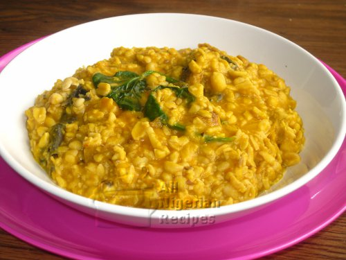
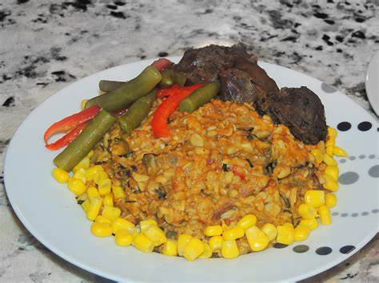
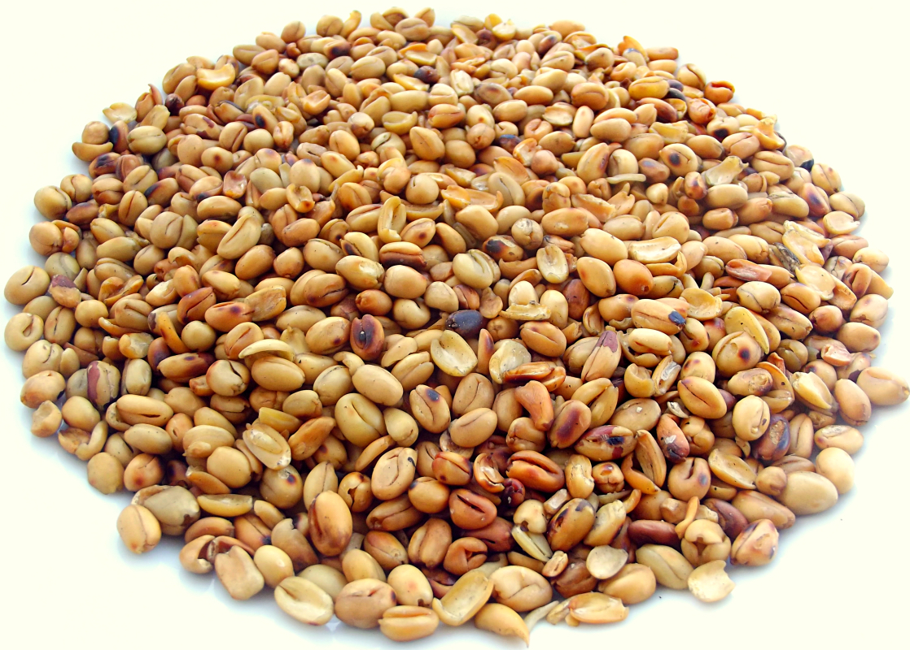
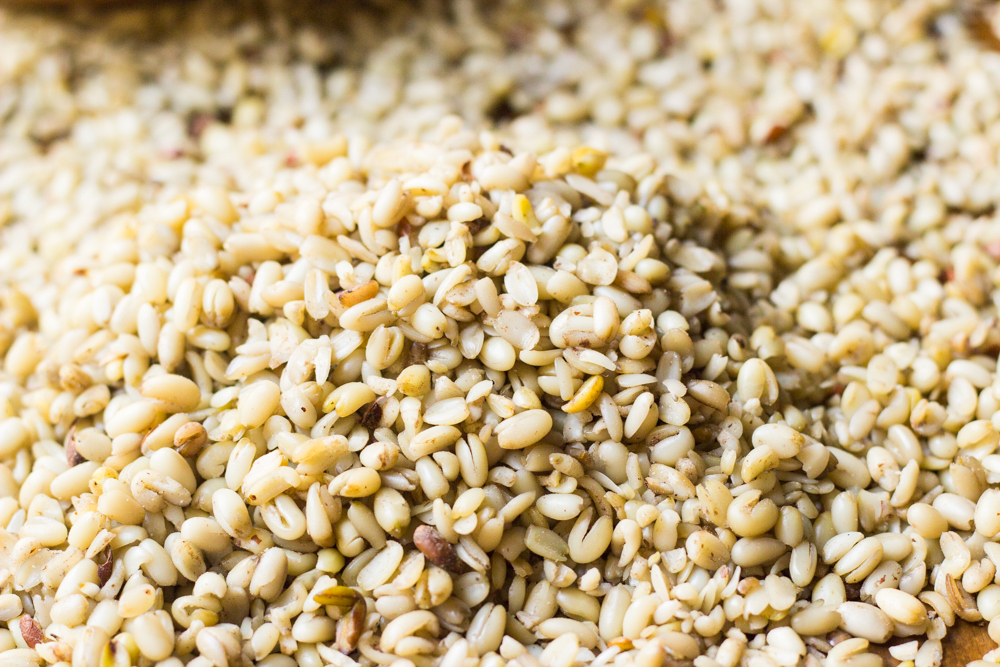
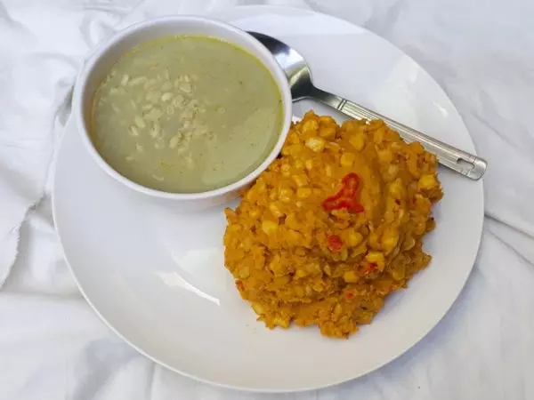

The African breadfruit (Treculia africana Decne) is large evergreen tree found in tropical and sub-tropical humid forests. It is widely distributed in West and Central Africa. It belongs to the family Moraceae and can grow to a height of 30 m while the stem can be up to 6 m wide.
The African breadfruit seed is a delicacy which is relished in South East Nigeria. The un-decorticated seeds may be roasted, de-hulled and eaten with palm kernel or coconut as snack. The fresh un-dehulled seeds may be blanched in hot water for 5–10 min, drained and dehulled. The seed coat is winnowed off, while the milk-coloured cotyledon is used in food preparations. It may be boiled to a soft consistency and eaten as porridge. It may be mixed with cereals such as rice yam, sorghum and maize or with tubers such as shredded cassava. It may be dried, ground into flour and used as a composite with wheat flour for baked foods. The flour from the decorticated seeds may be used for thickening soups. In the South East and South West Nigeria where the consumption of African breadfruit is common, it is very important in alleviating rural poverty because it can serve as a substitute for yam and is eaten in combination with many other foods. The cooked mashed porridge can be used as complementary foods for children. It may be used for oil extraction and as a flavoring for alcoholic drinks
How to prepare African breadfruit
| Ingredients | Measurement |
|---|---|
| Fresh breadfruit | 5 cups |
| Fresh pepper | 4 pieces |
| Red oil | half milk cup |
| Maggi | 1 cube |
| Salt | to taste |
| Potash/Ngu | 1 table spoon |
| Sent leaves (optional) | small quantity |
| Ukpaka/Ugba/oil bean seed (optional) | half cup |
| Fresh fish (optional) | 1 Titus fish |
|  |  |  |  |  |
|---|---|---|---|---|
| Breadfruit meal read to eat | Breafruit meal with some meat and corn | Roasted breadfruit | Uncooked breadfruit seeds | Some people enjoy it plain without adding red oil |